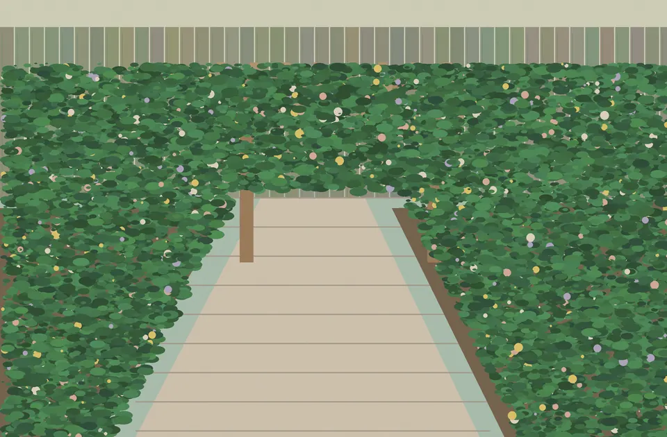
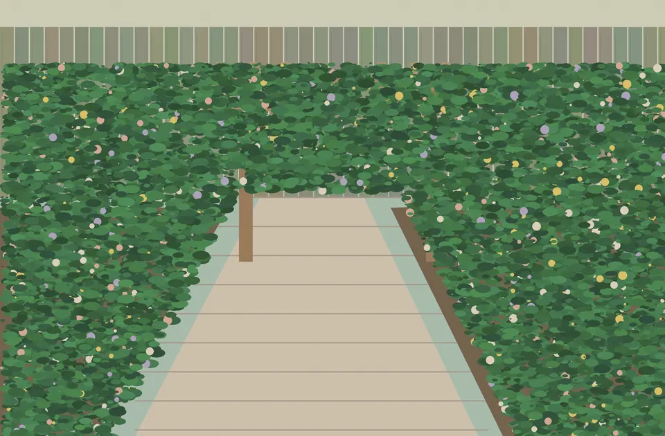
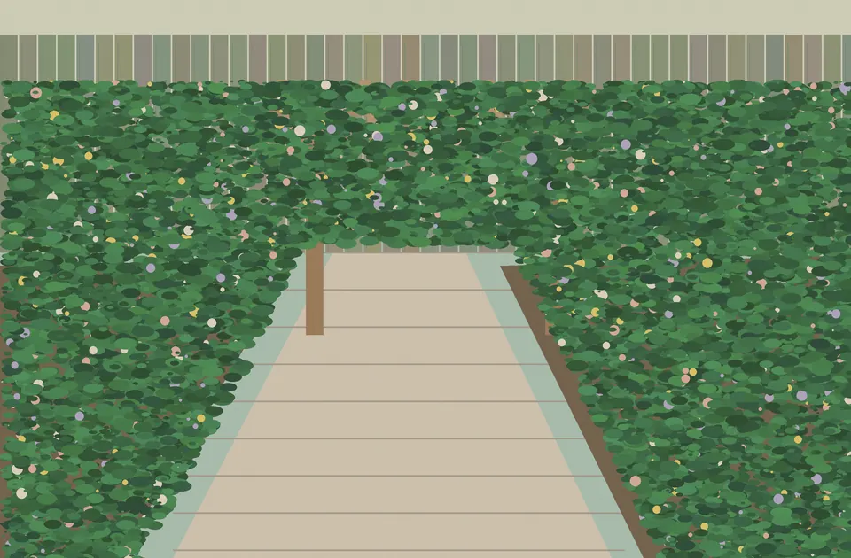
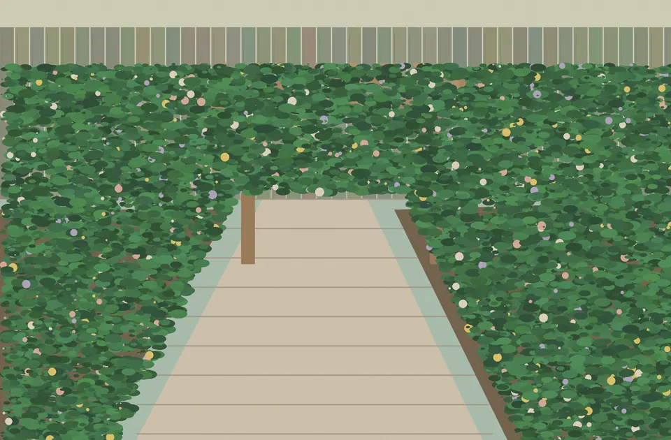

Planting plans
Layered colour, texture and habitat, with plants chosen for your space.

From a quiet corner to a garden full of life, we plan, plant and care for outdoor spaces that feel like home.
Explore garden services ↗
Layered colour, texture and habitat, with plants chosen for your space.

Make every corner count with simple layouts and thoughtful details.

Keep your garden growing well with pruning, soil care and seasonal attention.
We start with how you want to use the space. Then we make a practical plan, choose the right planting and help you keep it thriving.
Yes. Courtyards, narrow borders and compact spaces all have room for thoughtful planting.
Yes. Healthy plants and favourite features can be part of the new plan.